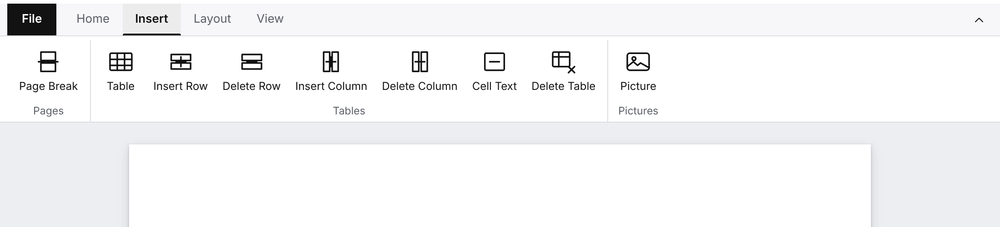
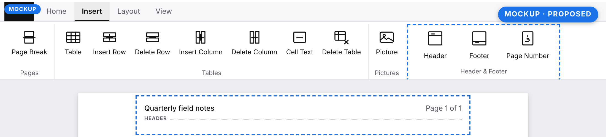
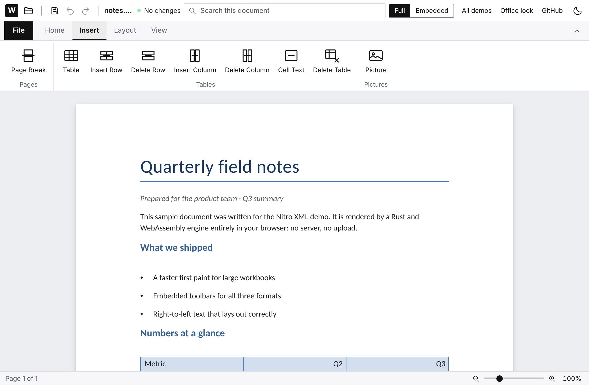
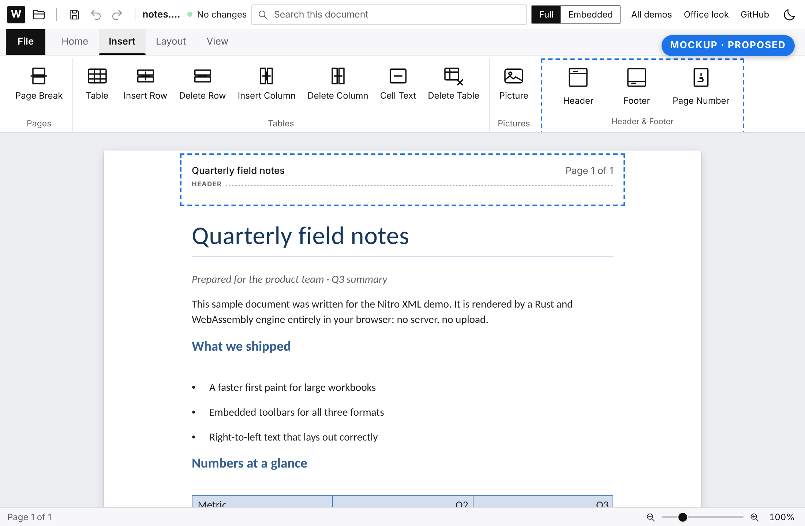

Headers, footers and page numbers, like Word
Approved 2026-11-20 (👍). Queued for the nightly build (host-API v0.2.0 shipped 2026-11-22).
Approve: tap 👍 on the issue · Decline: tap 👎
Close-up of the change




Full screen


Today: the Insert tab has Page Break, Tables and Picture, but no Header, Footer or Page Number, and the page's top margin is empty.


Mockup: Insert > Header & Footer (Header, Footer, Page Number). The page shows a header with the document title and Page 1 of 1, as in Word.
Tap an image to open it full size.
Why
Almost every professional Word document has a header, a footer or a page number, and people look for them on the Insert tab in Word, Google Docs, OnlyOffice and Collabora. Nitro already reads, paints and can set header and footer stories (the edit helpers landed with the earlier header/footer work), and the approved Print proposal will need those fields to show up on the printed page. What's missing is the Insert UI and a way to type into the header or footer in the document itself.
Definition of done
- Insert > Header & Footer offers Header, Footer and Page Number (the Font and Paragraph groups stay at two rows; this is a new Insert group). Choosing Header or Footer (or double-clicking the top or bottom margin) edits that story in place, with a clear Header or Footer label, as in Word.
- Page Number inserts a page-number field in the header or footer (user picks position: left, centre or right); the visible number updates when the page count changes, and a 3-page document shows 1, 2 and 3.
- Saved files open in Word and LibreOffice with the header, footer and page numbers intact (validator + round-trip in CI); a file that already has headers or footers stays editable and is not rewritten on open.
- Esc or double-clicking the body leaves header/footer edit; typography in the header uses the same font and paragraph commands as the body; undo covers the whole insert or edit as one step.
- Playwright tests cover insert header, insert page number, edit, undo and a save round-trip; bundle-budget and all required checks green. No first-load size limit is raised.
Approve: tap 👍 on the issue · Decline: tap 👎